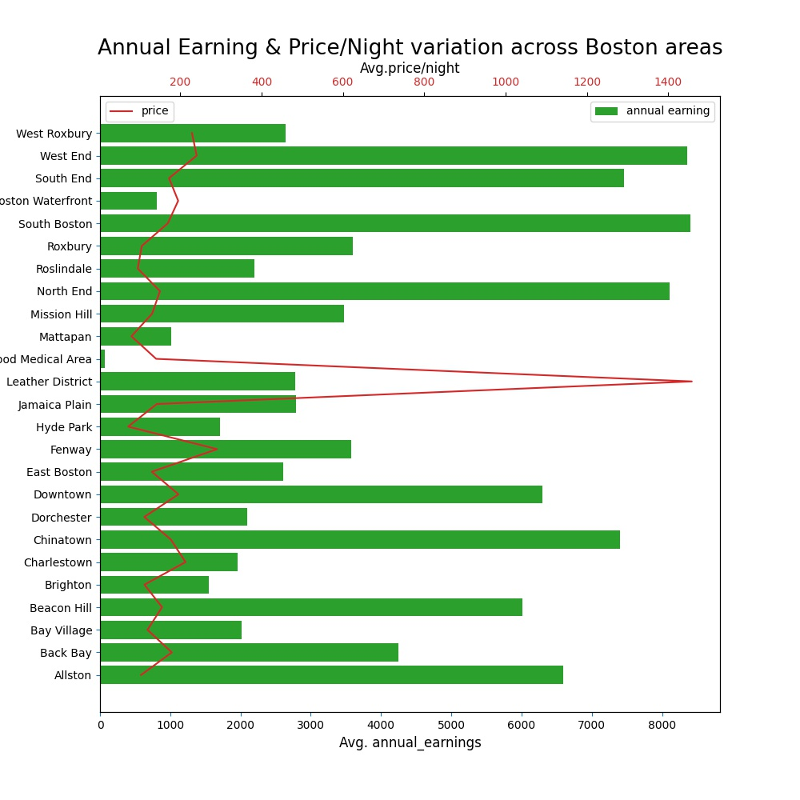

Should one list the spare room on Airbnb ?¶
- Introduction:
Airbnb has tremendously helped the tourism to flourish in new locations which were not supported by hotel industry. They have done it through providing online service to regular home owner, or even to any ‘Bed & Breakfast(b&b)’ service provider, by enabling them to allow tourists, or any regular visitor, to stay in their home at affordable price during visit to the home owner’s city . Thus this service brings additional revenue options to local home owners.
- Motivation:
From Airbnb perspective, inorder to grow their service in each city/region they would like to empower their home owners with data so that they provide their b&b service which remains economical & sustainable for both home owners and tourists/visitors. We presume that Airbnb can enhance this growth by answering relevant questions related to potential monetrary benefits of listing their proprerties. Providing details to this queries, Airbnb can thus encourage to more suitable home owners to list their availble house/apartments by providing insights from data of already occuring transactions between home owners and visitors in their city. This will help home owners to take prudent decision regarding their listing to create properous market of tourism in their city.
The article will try to evaluate and present the potenial monetary benefits for home owner when they list their apartment/house on Airbnb. This evaluation is based on the publicly available data 1 . The focus remains primarily on the Boston city’s data and evaluated only on last twelve months (Jan 2020-Dec 2020). Though python scripts 2 created to evaluate the results can be tweaked as required and similar evaluation can be done for any city or any time period. So let’s dive into the evaluation and results 3:
Q1: What is average earning potential for a general listing within a given city? 4
Data From Jan/2020-Dec/2020 shows average annual earning 5 among the listings across Boston City is $4179. The earning gained by various listing is shown below :
Thus earning graph reveals the expected inverse relationship of earning vs probability of higher earning, applicable to any regular service market. This relationship could also been seen in the price/night offerings in a city as shown below :
Above price offering graph of the Boston City’s Airbnb market, has average offering of $152 price/night to vistors. So let’s find what was the most opted price/night by visitors.

The above histogram indicates, $124 price/night was the most preferred by the visitors.
Q2: Does visit to the city is concentrated in specific months or is distributed across the year ?
Owner would like to know whether the indicated annual earning is gained in specific months or the earning is distributed consitently across the year. The specific term used for this variation called “Seasonality in demand”. This can be evaluated by mapping the visits across the year into specific months. The year along variation in average number of visits in shown below:
- Takeaway:
Well the demand is almost consitent through out the year with slight decrease in april-june months.
Q3: The average earnings looks OK, but where are the preference which governs the different asking price ? 6
As it is evident, there is huge range in the asking price by the listings, one would like to know what factors helps to bargain higher price or higher booking in a year.
- Geographic Demographics :
The demand and average price varies in differnt sections of the city.
- Kind of Listing :
The rental space kind is one of the factors which differentiate the listing in terms of asking price and prefence by the visitors.
- Host Responsiveness :
The time taken by the host to sort out the query or accept the visitor’s request also plays factor in increasing the selection of one’s listing.
Even features like instant booking of your listing can enhance chances for getting selected.
- Details’ transparency by Host :
The amount of details provided by the host, also plays an factor in opting out the property.

- Takeaway:
Based on the utility & convenience preference by the visitors, the listings can have options to bargain higher ask price.
- Q4: What are the top 3 factors which influence the selection of a listing ?
As demonstrated above, they are numerous factors which affect the decision of vistors in selection of a listing. Some of they can be controlled by owner while others are situational i.e out of the hands of owner. So to rank the influence of the factors, we built a linear model (using SVR 7) and the weight-coefficients was used to rank them on relative basis. Thus from the simpler proficent ML-model 8, probable factors and their relative impact was established to rank them. This rank can help owner to decide which factors he could use to increase the chance of selection of his listings.
Following graph shows the relative impact of various factors in predicting the number of visits to a specific kind of listing. As the value of impact reaches towards 1, better the rank of that factor. Thus the relative rank (lower is better) of the probable factors is as follows:

- Takeaway:
- Various factors have different level of impacts on the outcome of selection of a listing by a visitor. Among them top 3 factors which influence the visitors decision making are :
Review rating of that listing by prior visitors (review_scores_value).
Whether the host has been verified ().
Communication rating (review_scores_communication) . This means that visitors prefer the host who communicate efficiently during their decision making process of selection of listing.
Footnotes
- 1
The publicly available data can be accessed from this url
- 2
Source code is available as github repository
- 3
Detailed & thorough analysis, working of the code and the related underlying assumptions can be checked out here (a jupyter notebook). Only final results and visualization is demonstrated here to make it comprehensible for everyone.
- 4
Here city is to be considered as Boston City. As the scope of geographic region for analysis is only Boston City.
- 5
- 6
The earning seems to be low this year as there may be impact due to COVID-19 pandemic. We will provide the further study to understand year on year basis before COVID-19
- 7
Since the data values has was not completely linear and has some non-linear variance, SVR was selected instead of lasso/ridge model inorder to handle presence of non-linearity in the data.
- 8